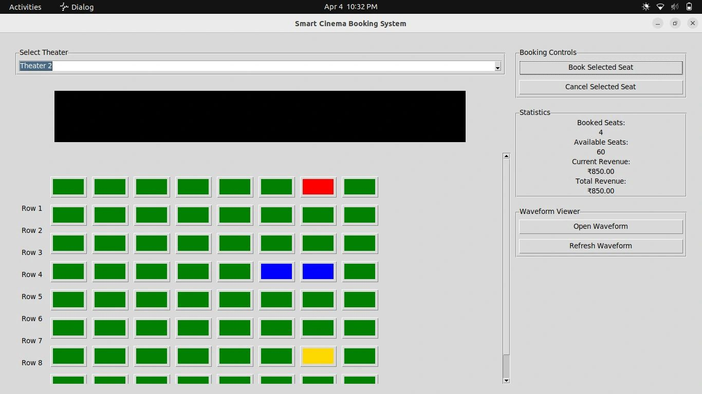

Projects

Voting Machine using MATLAB
Developed an automated voting system with advanced image processing to reduce voting frauds in real-time.
View Project
UART Protocol Implementation
Implemented UART protocol in Verilog with parity checking and simulation.
View Project
Wave Generators using eSim
Designed and simulated sawtooth and triangular wave generators using eSim.
View Project

Smart Cinema Ticket Booking using Verilog
Sophisticated and Hackfree ticketing in Hardware implementation.
View Project